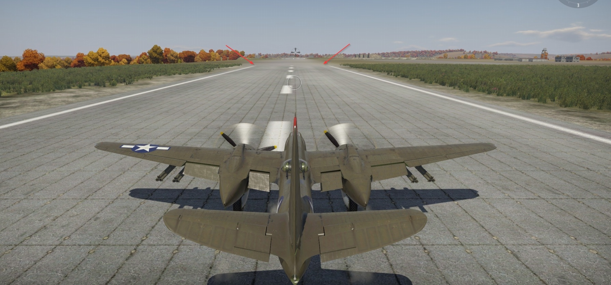

Shader Family: land_mesh_combined_decal
Overview
We use several shaders for object geometry to apply decals to the terrain. This is not to be confused with simple ground decals, which apply directly to the terrain geometry – that’s a different topic. Here, we are dealing with geometric decals.
When do we need to apply a decal to the terrain using geometry? When we want to modify the landscape’s geometry and add some new color (and possibly details). A good example would be airfields. Given their large size, it’s impractical to render them as full-scale models with unique textures (or tiled textures), as this would result in a poor texel density. Moreover, they wouldn’t blend seamlessly with the surrounding terrain – there would be harsh transitions between textures.
The solution is decals. For example, if you want a snowy airfield in a desert, you can achieve this with decals. All decals are prefabs – they are baked into the level’s geometry.
{kind=link}
There are several shaders we can use for this:
land_mesh_combinedand its dynamic versiondynamic_combined_decalland_mesh_combined_detailed_decaland its dynamic versiondynamic_combined_detailed_decalland_mesh_combined_mixed_decaland its dynamic versiondynamic_combined_mixed_decal
Important
The difference between dynamic and static shaders boils down to two key points:
Static shaders are applied to prefabs, while dynamic shaders are applied to dynamic models (for simplicity, think of them as models with dynamic shaders).
Objects with dynamic shaders can only be placed through the MissionEditor as units (whether they’re part of an object group or a dynamic object). In contrast, static objects are placed directly as entities in the Landscape tab.
Basic Shader: land_mesh_combined/dynamic_combined_decal
This is the simplest shader in the family. It has no parameters and applies only a decal texture to the geometry. The typical material configuration looks like this:
material{
name:t="airfield_side"
class:t="land_mesh_combined"
tex0:t="./norway_herdla_airfield_empty_alpha.tif"
}
The decal texture represents the diffuse component of what we are applying. The alpha channel controls the transparency of the decal.
For example:
Airfield on the Map |
Decal Diffuse |
Decal Alpha |
|---|
{kind=link}
{kind=link}
{kind=link}
Currently, this basic shader is rarely used because the need for greater detail, even for aircraft-related assets, has increased. However, it’s sometimes applied to the “manchette” of airfields (the curved edges used to blend the airfield surface with the surrounding terrain). In such cases, the shader with a transparent alpha texture is assigned to this geometry:
{kind=link}
Shader with One Detail Layer: land_mesh_combined_detailed_decal/dynamic_combined_detailed_decal
This shader works with three textures:
Slot 1: decal texture with transparency in the alpha channel.
Slot 2: diffuse detail texture.
Slot 3:
_rdetail texture.
The first two slots are self-explanatory. The _r texture requires further
reading, but in short, it contains a height map, microdetail index, smoothness,
and reflectance. Based on these parameters, the detail on the terrain is
embossed and exhibits the physical properties of the desired material.
Important
This _r texture is not the same as the one used for landscapes! On landscapes,
the _r texture includes reflectance, ambient occlusion, microdetail index, and
smoothness.
This shader has the following parameters:
script:t="detail1_size_ofs=0.25,0.25,0,0"– this offsets the detail texture (effectively controlling the tiling).
A typical material configuration looks like this:
material{
name:t="smolensk_aero_south"
class:t="land_mesh_combined_detailed_decal"
script:t="detail1_size_ofs=64,32,0,0"
tex0:t="smolensk_aero_south_tex.tif"
tex1:t="detail_soil_cracked_tex_d.tif"
tex2:t="detail_soil_cracked_tex_r.tif"
}
The logic is the same as in land_mesh_combined, except that this shader adds a
detail layer to the decal texture. Essentially, in this case, the decal acts
more as an overlay because of its large texel size, which results in a blurred
appearance.
{kind=link}
{kind=link}
The fine details come from the detail and microdetail textures. For instance, fine textures such as small cracks or wear patterns are handled by the detail layers, while larger surface elements, like ruts or pathways, are represented by the decal.
Shader with Four Detail Layers: land_mesh_combined_mixed_decal/dynamic_combined_mixed_decal
This is the most advanced shader in the family. It operates similarly to
land_mesh_combined_detailed_decal but supports up to four detail layers
instead of one.
Important
There’s a known issue: if an object has mapping in the third channel, its texture on the ground may appear semi-transparent. Avoid using unnecessary mapping channels.
Important
The dynamic version is not suitable for large surfaces (hundreds of meters) made of dense materials (concrete, asphalt, etc.), as it becomes semi-transparent when viewed from a distance. For example, you might notice that the markings and runway seem to fade when seen from far away.
{kind=link}
Shader Textures
The shader works with 10 textures:
Slot 1: decal
Slot 2: detail blending mask
Slot 4: diffuse texture for detail layer 1
Slot 5:
_rtexture for detail layer 1Slot 6: diffuse texture for detail layer 2
Slot 7:
_rtexture for detail layer 2Slot 8: diffuse texture for detail layer 3
Slot 9:
_rtexture for detail layer 3Slot 10: diffuse texture for detail layer 4
Slot 11:
_rtexture for detail layer 4
The blending mask is an RGB mask where:
R-channel represents detail layer 1
G-channel represents detail layer 2
B-channel represents detail layer 3
Areas with less than 100% brightness in all channels will display detail layer 4.
Note
Don’t worry if the fourth detail layer appears in areas without detail layers 1, 2, or 3. The final decal’s visibility is controlled by the decal’s alpha transparency, meaning you can control the appearance of all details, including the fourth layer, using the transparency mask.
For example:
Airfield on the Map |
Decal Diffuse |
|---|
Decal Alpha |
Blending Mask |
|---|
{kind=link}
In this case:
The blue channel defines the pathways.
The alpha mask smooths the edges of other detail layers, making them transparent and revealing the fourth layer.
All channels together create a multicolored effect on the runway, blending different types of sand, dirt, and rocks.
Some examples use more defined masks:
Airfield on the Map |
Decal Diffuse |
|---|
{kind=link}
{kind=link}
Decal Alpha |
Blending Mask |
|---|
{kind=link}
{kind=link}
{kind=link}
In this case:
R-channel represents concrete.
G-channel represents concrete slabs.
B-channel represents dirt.
A-channel (black in the mask) represents dirt paths and dust along the edges of the concrete and slabs.
All these elements appear based on the decal’s alpha transparency.
Parameters
script:t="detail1_size_ofs=0.25,0.25,0,0"– detail layer 1 texture offset (tiling)script:t="detail2_size_ofs=0.25,0.25,0,0"– detail layer 2 texture offsetscript:t="detail3_size_ofs=0.25,0.25,0,0"– detail layer 3 texture offsetscript:t="detail4_size_ofs=0.25,0.25,0,0"– detail layer 4 texture offset
A typical material configuration looks like this:
material{
name:t="markup_1"
class:t="land_mesh_combined_mixed_decal"
script:t="detail1_size_ofs=128,64,0,0"
script:t="detail2_size_ofs=128,64,0,0"
script:t="detail3_size_ofs=128,64,0,0"
script:t="detail4_size_ofs=256,128,0,0"
tex0:t="afghan_airfield_bagram_tex.tif"
tex1:t="afghan_airfield_bagram_tex_mask.tif"
tex3:t="detail_asphalt_a_tex_d.tif"
tex4:t="detail_asphalt_a_tex_r.tif"
tex5:t="detail_concrete_tex_d.tif"
tex6:t="detail_concrete_tex_r.tif"
tex7:t="detail_concrete_tex_d.tif"
tex8:t="detail_asphalt_cracks_tex_r.tif"
tex9:t="detail_sand_ground_tex_d.tif"
tex10:t="detail_sand_ground_tex_r.tif"
}